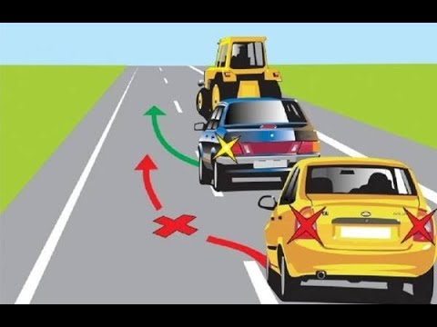

Обгон
Прежде чем начать обгон, водитель обязан убедиться в том, что: полоса движения, на которую он намерен выехать, свободна на достаточном для обгона расстоянии и этим маневром он не создаст помех встречным и движущимся позади по этой полосе транспортным средствам, в том числе и подающим предупредительные сигналы в соответствии с пунктами 19.11 и 19.12;
транспортное средство, следующее позади по той же полосе, не начало обгон;
водитель транспортного средства, движущегося впереди по той же полосе, не подал сигнал о маневрировании налево;
по завершении обгона с выездом на полосу (сторону) встречного движения он сможет,
не создавая помех обгоняемому транспортному средству, вернуться на ранее занимаемую полосу.
Обгонять безрельсовое транспортное средство разрешается с левой стороны. Однако обгон транспортного средства, водитель которого подал сигнал поворота налево
и приступил к выполнению маневра, производится с правой стороны.
По завершении обгона с выездом на полосу (сторону) встречного движения водитель обязан
вернуться на ранее занимаемую полосу движения.
Водителю обгоняемого транспортного средства запрещается препятствовать обгону
повышением скорости движения или иными действиями

Обгон запрещается
на регулируемых перекрестках с выездом на полосу встречного движения, а также на нерегулируемых перекрестках при движении по главной дороге, меняющей направление (за исключением разрешенного обгона справа), и по дороге, не являющейся главной (за исключением обгона на перекрестках с круговым движением, обгона двухколесных транспортных средств без бокового прицепа и разрешенного обгона справа);
на пешеходных переходах при наличии на них пешеходов;
на железнодорожных переездах и ближе 100 м перед ними;
транспортного средства, производящего обгон или объезд;
в конце подъема и на других участках дорог с ограниченной видимостью с выездом на полосу встречного движения.